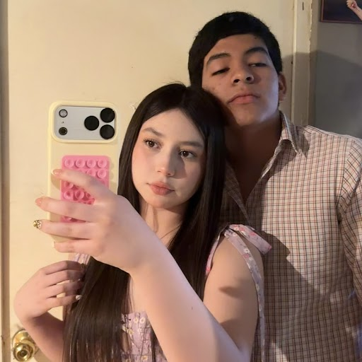

Francely Felix
Hola, mi nombre es Francely tengo 18 años, soy virgo, mi color favorito es el amarillo, estudio en cobach plantel Mtro. Jose vasconcelos Calderon, voy en 6to semestre y quiero estudiar Lic. en fisioterapia en UABC, mi cumpleaños es el dia 28 de agosto, mi materia favorita es Diseño Web y mi profe favorito es Noe Zavala por que me divierto y me gustan mucho sus clases y como explica, Tengo un perrito que se llama pablo y una cerdita que se llama valentina